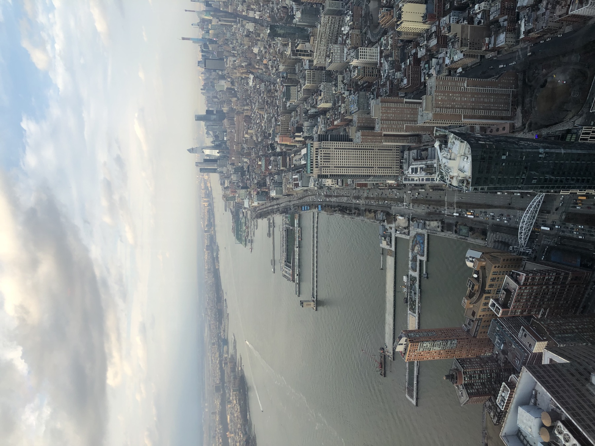
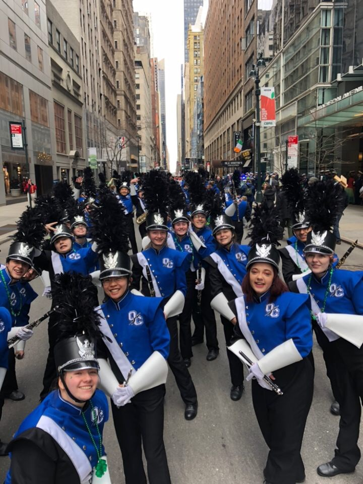
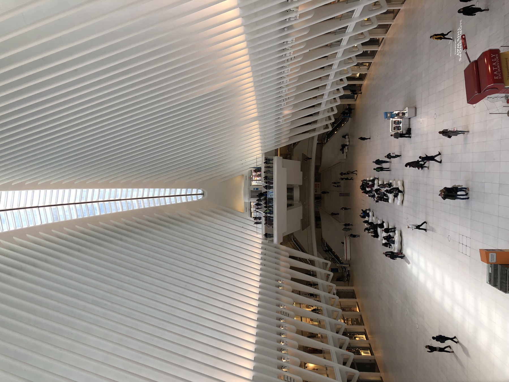
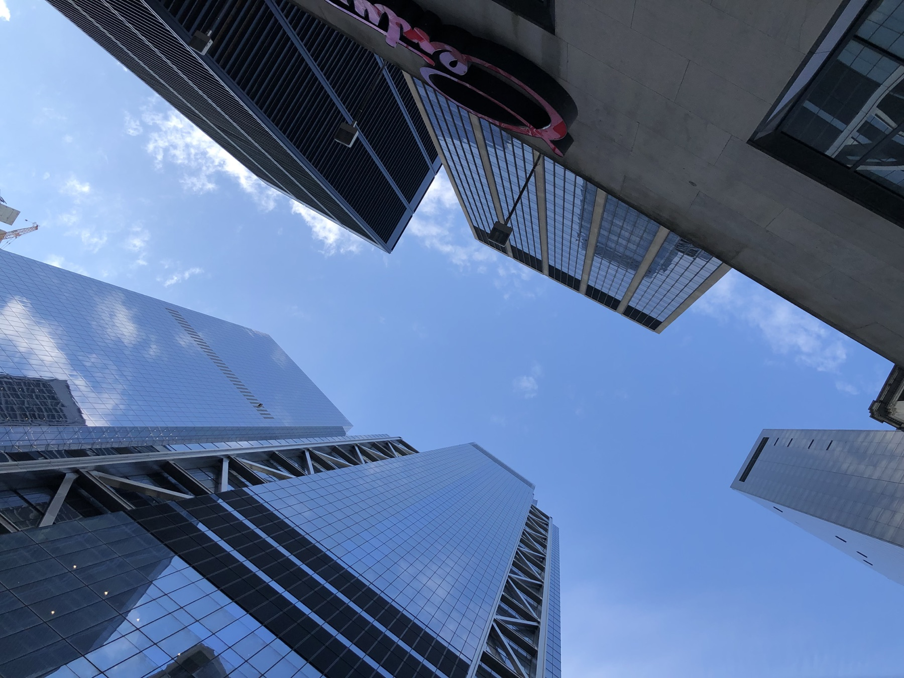
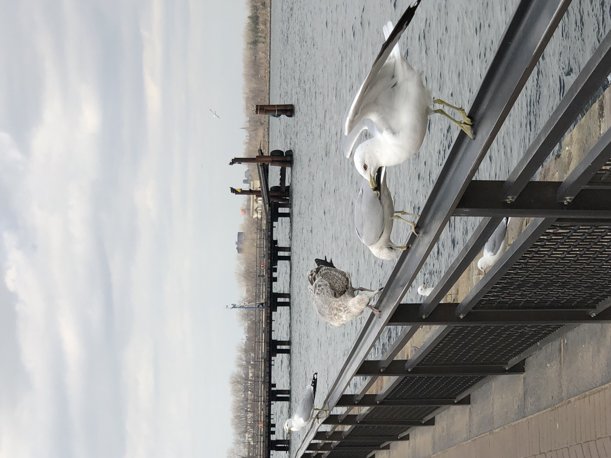

PHOTO JOURNAL / MARCH 2019
New York City
During a high school trip to New York City, I marched with my school band in Manhattan's St. Patrick's Day Parade. The trip paired the energy of the parade route with time to look up, walk the waterfront, and see the city from above.
5 PHOTOGRAPHS

THE PARADE
We traveled to New York as a high school band and joined the St. Patrick's Day Parade through Manhattan. For one morning, the streets became our performance route, lined with crowds, color, and music.

After the music, the city offered a different kind of rhythm.


LOOKING UP
Away from the parade, I kept noticing the scale of the city: the repeating white ribs of the Oculus, towers framing the sky, and long views that made Manhattan feel almost endless.

BY THE WATER
At the waterfront, the pace softened. The skyline gave way to open water, piers, and gulls along the railing: a quieter ending to a trip defined by marching, movement, and the scale of the city.